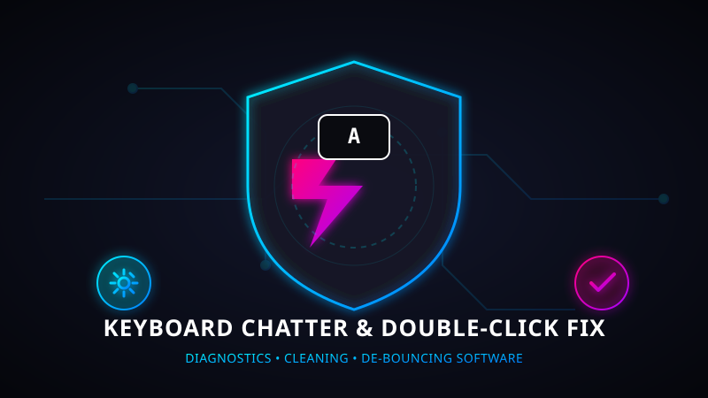
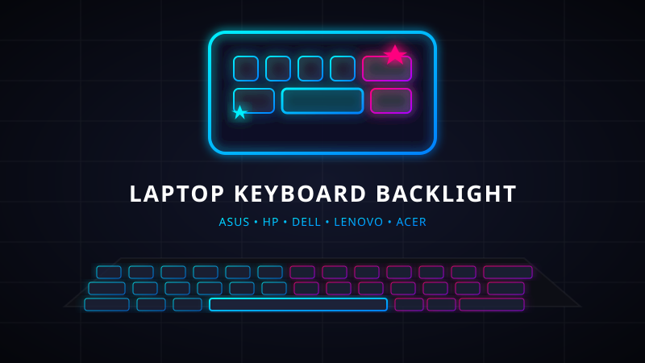
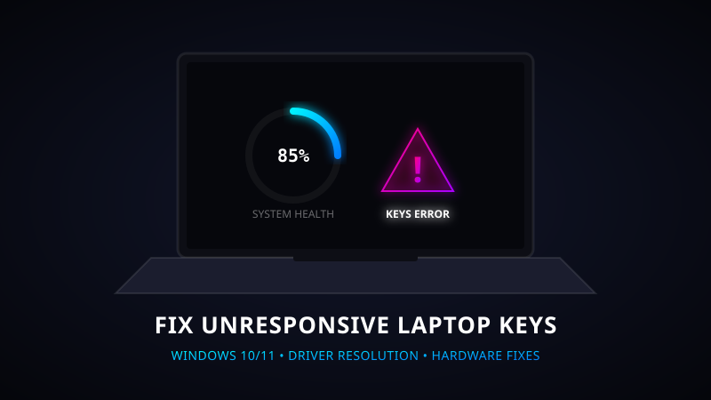
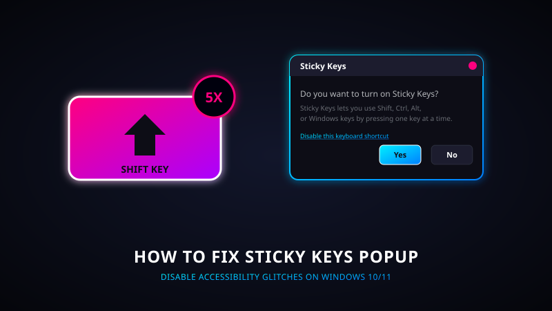
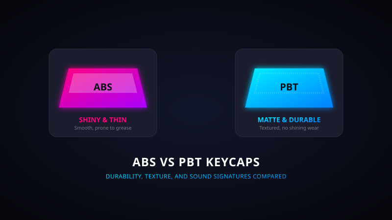
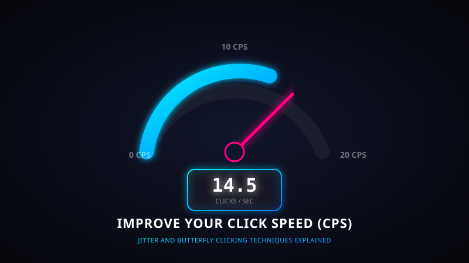
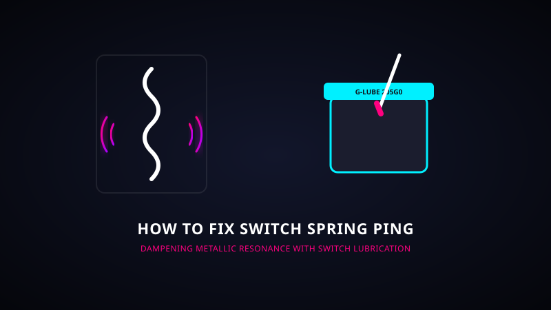
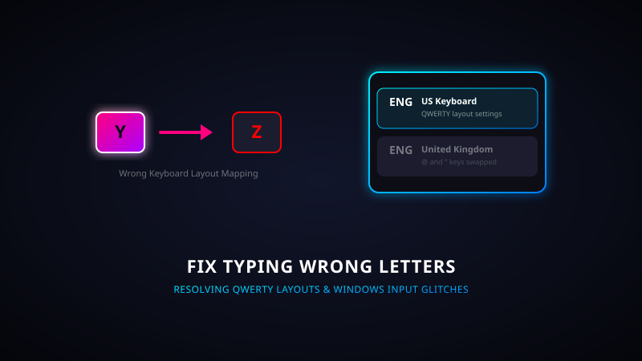
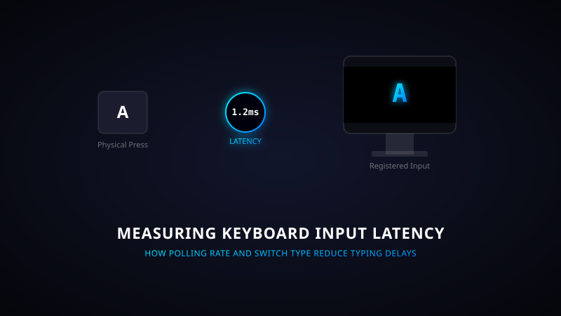
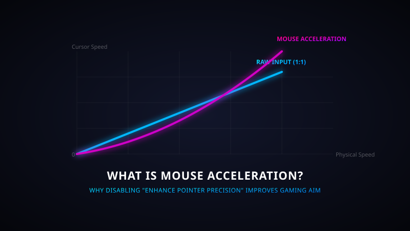

How to Fix Keyboard Double Clicking
Is your keyboard registering chatter or double letters? Discover step-by-step diagnostic fixes for mechanical and membrane switch chatter issues.
Expert diagnostic guides, troubleshooting tricks, and maintenance manuals written to help you optimize and repair your gaming setup.

Is your keyboard registering chatter or double letters? Discover step-by-step diagnostic fixes for mechanical and membrane switch chatter issues.

Struggling to find the backlight keyboard shortcuts for your laptop? Learn how to enable and adjust keyboard backlight light settings easily.

Step-by-step beginner's guide to cleaning mechanical switches, washing keycaps safely, and maintaining clean hardware plates.

Which is best for gaming & typing? Detailed structural differences, NKRO key rollover comparison, and switch types explained.

Laptop keyboard key not responding on Windows 10 or 11? Learn how to fix driver conflicts, accessibility glitches, and dirty dome plates.

Red, Blue, Brown, or Black? Learn the key differences between linear, tactile, and clicky switches to find your perfect fit.

Double letters when typing once? Learn how contact bounce causes keyboard chatter and how to resolve it with de-bounce software.

How many keys can your keyboard register at once? Understand keyboard ghosting and why gamers need N-Key Rollover.

Getting annoying popups when pressing Shift repeatedly? Learn how to disable Sticky Keys shortcuts on Windows 10 & 11.

Which plastic keycap type is best? Learn the structural, texture, and durability differences between ABS and PBT keycaps.

Want to click faster? Discover the best clicking methods like jitter clicking, butterfly clicking, and drag clicking to boost your CPS.

Annoyed by metallic ringing sounds when typing? Learn how to lubricate switch springs and add case foam to eliminate switch ping.

Is your keyboard typing different characters or swapping @ and " keys? Learn how to fix language layouts and input settings in Windows.

Is your keyboard lagging? Learn how keyboard input latency is measured and how to check your device's polling rate and scan rate.

Learn how mouse polling rate (Hz) affects cursor smoothness and response times in competitive games. Check your mouse rate today.

Why do gamers disable mouse acceleration? Learn how raw mouse input improves aim muscle memory and how to turn off pointer enhancement.

Is your gaming mouse registering accidental double clicks? Learn how to clean microswitches, adjust click thresholds, and fix bouncing contacts.